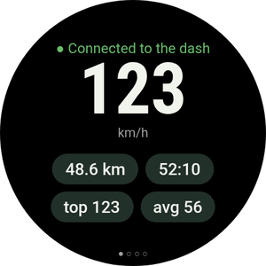
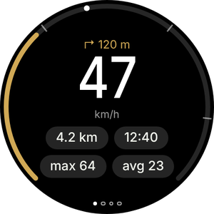
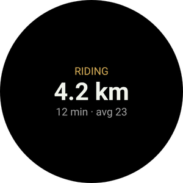
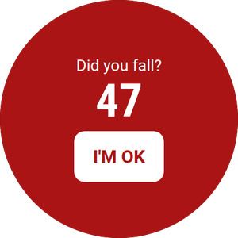
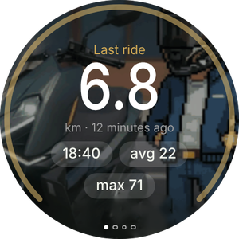
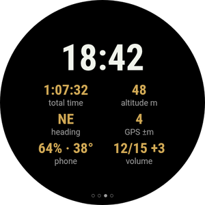

Your bike on your wrist
The Wear OS app is optional and works with the phone app. It shows your speed and the next manoeuvre, vibrates before each turn, leads you back to your parked bike and lets you control Android Auto on the dash without touching your phone.
Don't have the phone app yet? Start with the phone guide.

What you'll see on the watch






- A watch with Wear OS 3 or later: Galaxy Watch 4 onwards, Pixel Watch and others. Huawei, Amazfit and Garmin watches don't run Wear OS and won't work.
- The watch already paired with your phone, and RideScreen AA 2.2 or later installed on the phone.
- Phone and watch on the same Wi‑Fi network (your home one, for example). Only needed for this install.
- About 10–15 minutes. You do it only once: later versions install from the phone.
Install the app on the watch
Watches can't open APK files like a phone, so this first time you install it with a phone app that talks to the watch over Wi‑Fi (wireless debugging). It sounds technical, but it's just a few taps.
-
Download the watch APK on your phone
Tap the button to download the watch APK directly (the one ending in WearOS-reloj.apk). Leave it in your Downloads folder.
Also install one of these Play Store apps on the phone: Wear Installer 2 or Bugjaeger.
Download the watch APK -
Turn on the watch's developer options
Galaxy Watch: Settings → About watch → Software information → tap Software version 5 times.
Pixel Watch and others: Settings → System → About → tap Build number 7 times.
A message says developer options are turned on.
-
Connect the watch to Wi‑Fi
Settings → Connections → Wi‑Fi: set it to On (not Automatic) and join the same network as the phone.
If the watch later shows no IP address, turn off the phone's Bluetooth for a moment: the watch only uses Wi‑Fi when it can't reach the phone over Bluetooth. -
Turn on wireless debugging
Settings → Developer options → turn on ADB debugging and Wireless debugging. Open Wireless debugging → Pair new device.
The watch shows a 6-digit code and an address with a port, for example 192.168.1.40:37115.
Raise the watch's screen timeout first: if the screen goes off while pairing, the code expires. -
Pair and install from the phone
Open Wear Installer 2 (or Bugjaeger), type the address and the pairing code, then connect using the address shown on the Wireless debugging screen.
Pick the …-WearOS-reloj.apk file from Downloads and install it. Within a minute RideScreen AA appears on the watch.
The port to pair and the port to connect are different. It's the most common mistake. -
Open it and turn debugging off
Open RideScreen AA on the watch and allow location (for the compass to your bike) and notifications.
You can now turn off wireless debugging and ADB debugging: they aren't needed to use or update it.

Control Android Auto from the watch
The Zontes dash isn't a touchscreen. With the watch you control Android Auto like a car's controller: a wheel to move around the screen and buttons to select, go back or talk to the Assistant.
The D-pad (swipe to the second page)
- ▲ ▼Tap: turns Android Auto's wheel, jumping from item to item. Hold: up or down arrow.
- ◀ ▶Left and right arrows: change column or tab.
- OKSelect the highlighted item.
- ↩Back.
- ⌂Android Auto home.
- 🎤Google Assistant ("take me to…", "play music").
- 📊Back to the ride data.
With a rotating bezel or crown
Galaxy Watch Classic, Pixel Watch and watches with a rotating crown.
- Turn the bezel or crown to move around Android Auto, just like a car's controller wheel. It works on any watch page.
- Press OK on the D-pad to select.
- On the Rides page, the bezel scrolls the list instead of moving Android Auto.
Without a bezel
Standard Galaxy Watch (4, 5, 6, 7…) and flat-screen watches.
- The ▲ ▼ buttons on the D-pad act as the wheel: one tap, one step.
- Hold them when you need a real arrow, for example to go up a list.
- On Galaxy Watches with a touch bezel, turn it on in the watch settings and slide your finger around the edge of the screen as if it were the bezel.
The app's pages
Swipe left and right. The dots at the bottom show which page you're on.

Turn vibrations
With Android Auto navigation, the watch vibrates before each manoeuvre: 2 taps for left, 3 for right, one long and N short for exit N of a roundabout and two long for a U-turn.
Turn it on in the phone app: ⚙️ Settings → Ride extras → Turn vibrations on the watch. It's experimental.
Tile and complication
Add the Ride tile (swipe from the watch face and tap +) to see the current ride or where you parked. The RideScreen · km complication puts the ride's km on your watch face.
Update the watch
-
From the phone, no computer
From version 2.2, when a new version comes out: on the phone, ❓ Help → ⌚ Update the watch app → Latest version.
The phone downloads the watch app and sends it over Bluetooth. It takes a couple of minutes: you'll see progress on both phone and watch. When it finishes, tap Install on the watch.
The first time, the watch asks you to allow RideScreen AA to install apps: turn it on and go back.
Common problems
The watch shows no IP addressWhen turning on wireless debugging
- Set the watch Wi‑Fi to On, not Automatic, and join the same network as the phone.
- Turn off the phone's Bluetooth for a moment so the watch switches to Wi‑Fi. Turn it back on when you're done.
Wear Installer won't connectWhen pairing
- Use the port from Pair new device to pair, and the one on the main Wireless debugging screen to connect. They're different.
- If the code expired, tap Pair new device again: you get a new one.
"Package appears to be invalid"When installing
It's probably the phone APK. The watch needs the one ending in WearOS-reloj.apk.
The watch says "No data from phone"With the app installed
- Open RideScreen AA on the phone at least once and check the watch is connected to the phone (Galaxy Wearable or Pixel Watch app).
- The phone and watch apps must come from the same download page: they don't work with the Play Store version or the original OpenCfMoto.
"⚠️ Start the AA server"On the ride page
Android Auto's head unit server is off on the phone. In Android Auto: ⋮ → Start head unit server (step 6 of the phone guide).
"This watch doesn't let apps install updates"When updating from the phone
Your watch doesn't allow one app to install another. Install the new version as you did the first time (Part 1).
None of the aboveHow to get help
On the phone tap ❓ Help → Share logs and send it to the group with your watch and phone models.
RideScreen AA is free and open source, based on OpenCfMoto by Alexandru (zanderp). It is not an official Zontes or Google app. Screens are illustrative: exact setting names may vary on your watch. · Phone guide